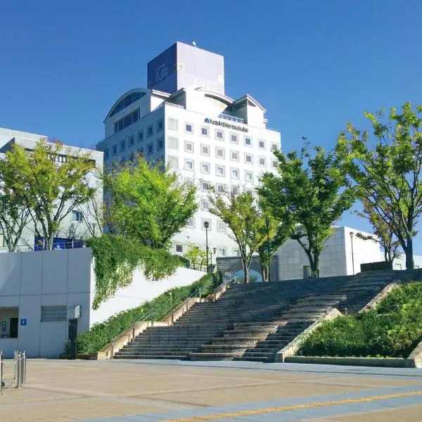
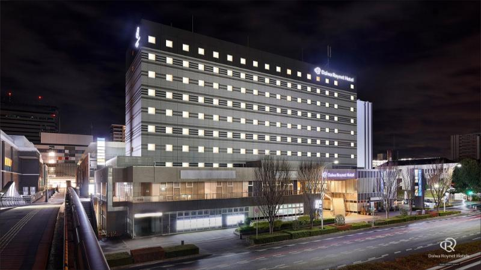

1. Daiwa Roynet Hotel Tsukuba (ダイワロイネットホテルつくば)
โรงแรมที่ดีที่สุดสำหรับการเดินทางครอบครัว ตั้งอยู่ติดสถานี Tsukuba Station (ทางออก A5 เดินเพียง 1 นาที 101 เมตร) ห้องพักกว้างขวาง สดสะอาด มีอ่างอาบน้ำในตัว เตียงนอนสบาย สิ่งอำนวยความสะดวกครบครัน ใกล้ร้านสะดวกซื้อ FamilyMart และศูนย์การค้า Tonarie

2. Hotel Nikko Tsukuba (ホテル日航つくば)
โรงแรมหรูหรามาตรฐานนิปปอนเซ็นจูรี เชื่อมต่อกับทางเดินลอยฟ้า Pedestrian Deck มีห้องอาหารชั้นเลิศ สระว่ายน้ำในร่ม บริการดีเยี่ยม ตกแต่งสไตล์โมเดิร์นคลาสสิก มอบความผ่อนคลายระดับพรีเมียม

3. Tsukubasan Edoya Ryokan (筑波山 江戸屋)
เรียวกังดั้งเดิมสไตล์ญี่ปุ่นประวัติศาสตร์ยาวนานกว่า 360 ปี ตั้งอยู่เชิงเขาสึคุบะ ใกล้ศาลเจ้า Tsukubasan Shrine มีบ่อน้ำแร่ออนเซ็นธรรมชาติกลางแจ้ง (Open-air Onsen) ท่ามกลางป่าสน และเสิร์ฟอาหารคายเซกิ (Kaiseki) วัตถุดิบท้องถิ่นตามฤดูกาล

4. Urban Hotel Tsukuba (アーบันホテルつくば)
โรงแรมบรรยากาศเงียบสงบ ห้องพักสะอาด กว้างขวาง มีที่จอดรถฟรี และสิ่งอำนวยความสะดวกพื้นฐานครบถ้วน เหมาะสำหรับผู้ที่ต้องการความประหยัดและพักผ่อนในบรรยากาศผ่อนคลาย
ตารางเปรียบเทียบที่พักสำหรับครอบครัว
| ชื่อที่พัก | ระยะจากสถานี TX | ประเภทที่พัก | ราคาประเมิน/คืน | เหมาะกับใคร |
|---|---|---|---|---|
| Daiwa Roynet Hotel Tsukuba | 101 ม. (เดิน 1 นาที) | City Hotel (Modern) | 12,000 - 18,000 เยน | ครอบครัว (สะดวกที่สุด ⭐) |
| Hotel Nikko Tsukuba | 250 ม. (เดิน 3 นาที) | Full-service Hotel 4★ | 16,000 - 26,000 เยน | นักท่องเที่ยวเน้นความหรูหรา |
| Tsukubasan Edoya Ryokan | 16.5 กม. (บัส 36 นาที) | Traditional Onsen Ryokan | 28,000 - 42,000 เยน | ผู้ต้องการพักผ่อนแช่ออนเซ็น |
| Urban Hotel Tsukuba | 2.5 กม. (บัส 8 นาที) | Business / Budget Hotel | 8,500 - 12,000 เยน | เน้นความคุ้มค่าประหยัดงบ |